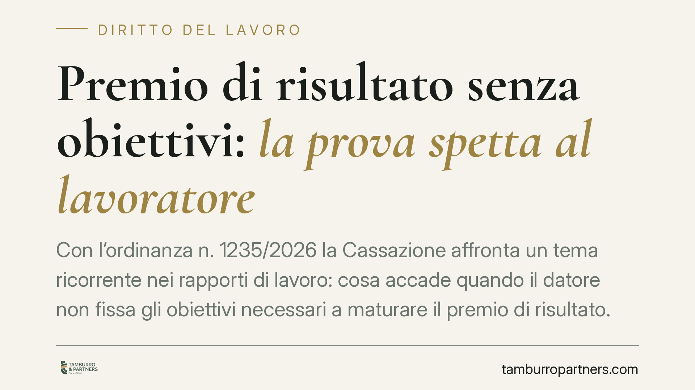

Premio di risultato senza obiettivi: la prova spetta al lavoratore
Con l'ordinanza n. 1235/2026 la Cassazione affronta un tema ricorrente nei rapporti di lavoro: cosa accade quando il datore non fissa gli obiettivi necessari a maturare il premio di risultato. La Corte esclude l'automatismo del pagamento e sposta sul dipendente l'onere di dimostrare la concreta probabilità di aver centrato il target. Una decisione che incide direttamente sulle strategie difensive dei lavoratori.

Il caso
Un lavoratore rivendicava il premio di risultato previsto dal contratto, sostenendo che il datore non avesse mai fissato gli obiettivi necessari per maturarlo. La tesi era lineare: se l'azienda omette di stabilire i parametri, il premio diventa dovuto per intero, perché l'inadempimento è del datore.
La Corte d'appello di Roma aveva respinto la domanda. La Cassazione, con l'ordinanza n. 1235/2026 (Sez. Lavoro), ha confermato quell'impostazione, precisando un principio destinato a orientare il contenzioso futuro.
Inquadramento normativo
Il punto di partenza è l'art. 2697 del codice civile, che regola la ripartizione dell'onere della prova: chi vuole far valere un diritto in giudizio deve provare i fatti che ne costituiscono il fondamento. Si tratta della regola generale secondo cui chi afferma deve dimostrare.
La Corte collega questo principio agli artt. 112 e 115 c.p.c., che impongono al giudice di decidere sulla base delle prove effettivamente addotte dalle parti, entro i limiti della domanda proposta. Il giudice non può integrare d'ufficio la prova mancante.
Il ragionamento è questo: la mancata fissazione degli obiettivi costituisce un inadempimento del datore, ma non trasforma automaticamente il premio in un credito certo. Il premio di risultato è, per definizione, legato al raggiungimento di un risultato. Senza la prova che quel risultato era concretamente conseguibile, manca il presupposto stesso del diritto.
La perdita di chance
La Cassazione inquadra la questione nella categoria della perdita di chance. Quando il datore omette di fissare gli obiettivi, non priva il lavoratore del premio in sé, ma della possibilità di maturarlo. Il danno risarcibile non è quindi l'intero premio, bensì la perdita della concreta probabilità di ottenerlo.
Il termine tecnico "chance" indica una possibilità favorevole già presente nel patrimonio del soggetto, non una mera aspettativa astratta. Per essere risarcibile deve trattarsi di una probabilità seria e apprezzabile, non di una speranza generica.
Da qui la conseguenza pratica: il lavoratore deve dimostrare, con elementi concreti, che avrebbe avuto una ragionevole probabilità di centrare il target. Dati di performance, risultati degli anni precedenti, andamento aziendale, confronto con colleghi in posizioni analoghe. Senza questi elementi, la domanda resta sfornita di prova e viene respinta.
Implicazioni pratiche
Per chi lavora con sistemi di incentivazione legati a obiettivi, la decisione ha un impatto diretto.
Per il lavoratore: non basta più lamentare che l'azienda non ha fissato i target. Occorre costruire un quadro probatorio che renda plausibile il raggiungimento del risultato. La semplice omissione del datore, da sola, non apre la strada al pagamento integrale.
Per il datore: l'omessa fissazione degli obiettivi non è priva di conseguenze, ma non espone automaticamente all'obbligo di pagare l'intero premio. Resta comunque un inadempimento che può generare responsabilità risarcitoria nei limiti della chance effettivamente perduta.
La pronuncia conferma una tendenza giurisprudenziale che valorizza la sostanza del rapporto contrattuale rispetto agli automatismi. Il premio variabile è variabile anche nel contenzioso.
Cosa fare in concreto
- Conservate la documentazione sulla performance: dati di vendita, report, valutazioni periodiche, email e comunicazioni che attestino i risultati raggiunti nel periodo di riferimento.
- Ricostruite lo storico dei premi: i target e gli importi percepiti negli anni precedenti sono un indice della probabilità di conseguimento.
- Verificate il testo contrattuale e integrativo: controllate come sono definiti gli obiettivi, i criteri di calcolo e le clausole sulla loro fissazione.
- Valutate con un professionista la quantificazione della chance: la domanda va impostata sulla perdita di possibilità, non sul premio pieno, per evitare un rigetto integrale.
- Agite tempestivamente: raccogliere le prove a distanza di tempo è più difficile, soprattutto quando riguardano dati aziendali.
Disclaimer
Contributo informativo a cura di Tamburro & Partners - Avv. Giuseppe Tamburro. Non costituisce parere legale.
Ogni storia di lavoro ha i suoi tempi.
Se gestisci HR e vuoi un confronto su contenzioso, ispezioni o licenziamenti, scrivi allo studio. Ti rispondiamo entro un giorno lavorativo.